Playtest výučby „Prvá hra“ 20261025-122456
Nováčik: Dodo Skipper (študent, netrpezlivý, zameranie ovládanie a tempo), rozlíšenie 1440×800. Dokončil 47/47, 80 akcií, 2 chyby servera (obe zámerné zlé kliky), asi 10 minút. Test bežal na verzii pred commitom 908e567 (kvíz v bare).
Verdikt
Áno po opravách. Výučba sa dá dokončiť a nováčik ju hodnotí 6,0 z 10; pred zverejnením treba opraviť rozpory medzi Melicharom a stolom (krok 6, 41, 34/35) a sivý stôl.
Tri najdôležitejšie opravy: (1) krok 6 so Smetiskom, (2) „Ďalej to nepôjde“ v kroku 41 a ďalšie rozpory textu so stolom, (3) sivý stôl a zvýraznenie nesúvisiacich panelov.
1. Korektnosť pravidiel (rozpory Melichar vs. stôl)
Overené proti docs/PRAVIDLA.md (v5), cards.json a scenáru prva-hra.json. Výpočty hry sedia; rozpory sú chyby scenára alebo nedopovedané vedľajšie účinky. Len K11 je chyba hry (hláška). Hráč bol jeden, takže ide o názor jedného nováčika.
K1 · Krok 5–6 (i-senok, k-stavba) — scenár + UI
Rozpor: Melichar: „Dnes ho za teba postaví hra.“ Stôl: nadpis „Vyber 4 karty na Smetisko… Do Šenku 8/4“, tlačidlo POTVRDIŤ; krok 6 je automatický a nemá text Melichara (melichar: ""), bublina chýba, po ~3 s sa posunie sám.
Overenie: Stavba šenku je v scenári príkaz auto, ale obrazovka Draftu sa vykreslí ako interaktívna výzva pre hráča. Rozpor Melichar vs. stôl je potvrdený; v reálnom hraní by hráč klikal na karty bez efektu.
Krok na reprodukciu: Výučba, krok 5 → Enter → krok 6.

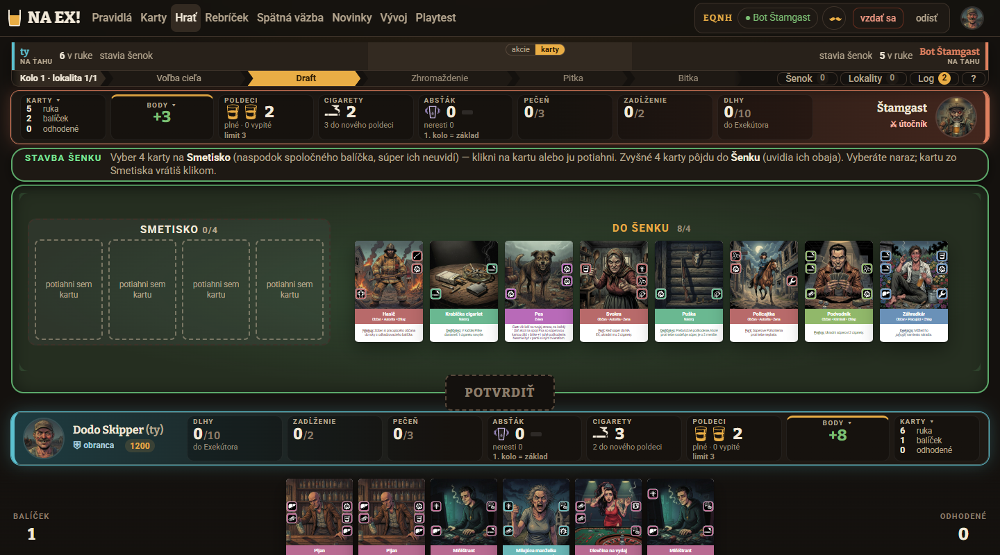
K2 · Krok 17, 20, 24 (k-pijan, k-hasic, k-ministrant) — scenár
Rozpor: Melichar hovorí len o tuhom. Pás nad stolom ukazuje aj Poškodenie pečene (+1 tebe, +1 Štamgastovi) a Cigaretu +1; pečeň sa dvíha bez slova.
Overenie: Hra je správna: Pijan má na oboch hranách Poškodenie pečene a Miňištrant na ľavej (cards.json). Scenár tieto vedľajšie akcie nespomenie.
Krok na reprodukciu: Krok 17: polož Pijana k Jednote a pozri pás nad stolom.

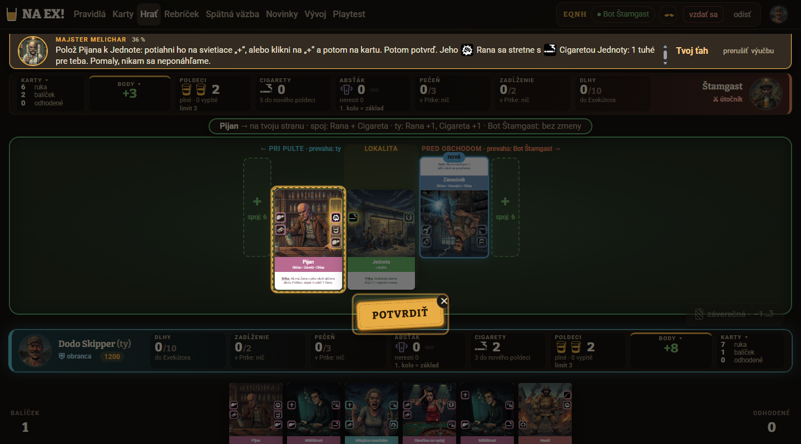
K3 · Krok 31 (i-cena) — scenár
Rozpor: Melichar: NA EX naplní pečeň. Stôl ukazuje 0 ▸ 2/3, hoci NA EX = 1 poldeci.
Overenie: Číslo sedí: +1 z Pijana (Poškodenie pečene) a +1 z NA EX (pečeň tomu, kto ho dal, §8). Chýba vysvetlenie prvej jednotky.
Krok na reprodukciu: Krok 31: pozri bar Pečeň po NA EX na Hasiča.

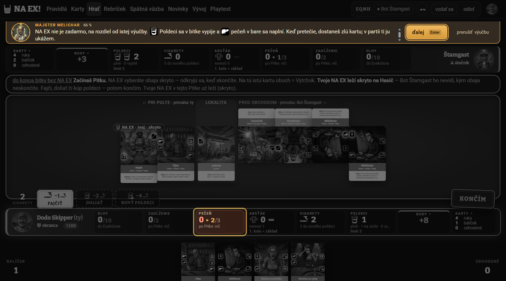
K4 · Krok 34 (k-hotovo-bot) — scenár + UI
Rozpor: Body Štamgasta 3 → 6 a moje 8 → 7 bez komentára; lišta „BODY +8“ je od kroku 1. Melichar tvrdí, že body dávajú starší až na konci.
Overenie: Lišta Body zrejme ukazuje priebežný stav podľa dnešných scorecardov; nie je to chyba výpočtu, ale bez vysvetlenia pôsobí, že hra je rozhodnutá od začiatku. Dôvod konkrétnej zmeny 3→6 som z podkladov neoveril.
Krok na reprodukciu: Krok 1 a krok 34: pozri BODY v lište.

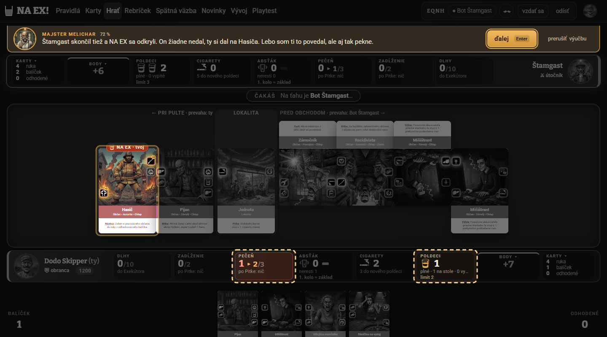
K5 · Krok 35 (k-naex-bot) — scenár + UI
Rozpor: Bublina hovorí o vyhodnotení Pitky, obrazovka už ukazuje panel starších (PREBYTOK ZOSTÁVA 5); pečeň sa vynulovala bez slova.
Overenie: Vynulovanie pečene po Pitke je pravidlo (§7, §8). Panel starších sa otvára skôr, než Melichar prejde na bitku (krok 36).
Krok na reprodukciu: Krok 34 → Enter → krok 35.

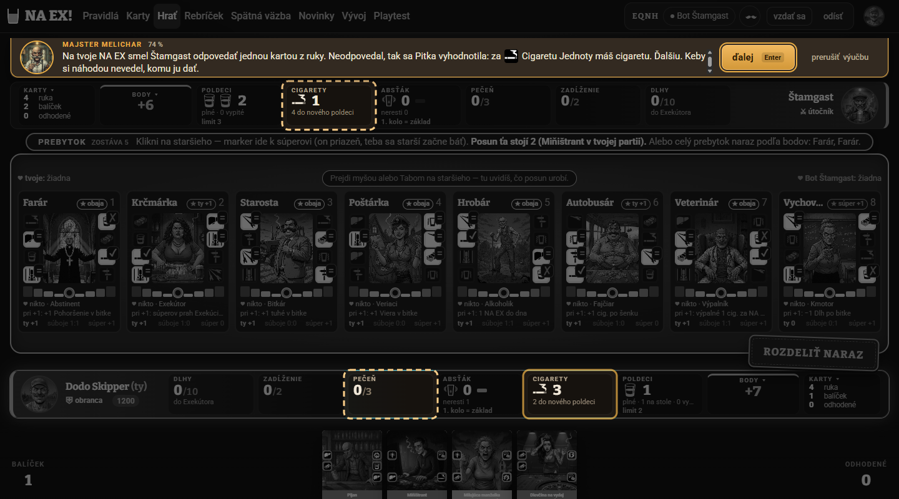
K6 · Krok 36 (i-bitka) — UI
Rozpor: Animácia bitky ukazuje „TUHÉ 1 : 0“, Melichar „7 : 2“. Konečný výsledok sedí.
Overenie: Výsledok je správny (1 + 6 zdvojená Petelica = 7 proti 2). Animácia ide po akciách a nevidno, kedy sa dostane na 7:2.
Krok na reprodukciu: Krok 35 → 36.

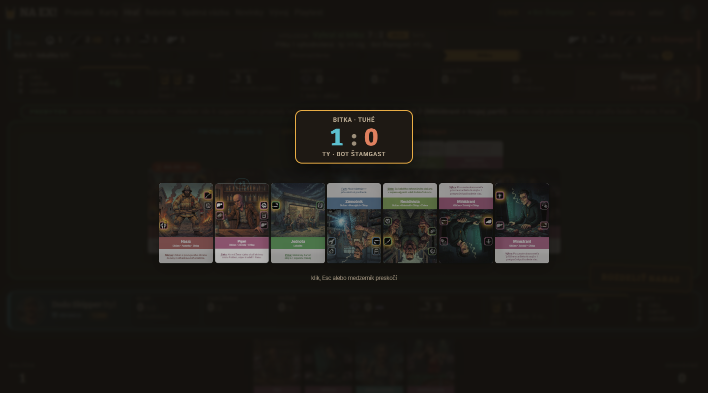
K7 · Krok 41 (k-prebytok2) — scenár — chyba textu
Rozpor: Melichar: „Ďalej to nepôjde“ (Miňištrant zdražuje posun na 2). Stôl: ZOSTÁVA 3, druhý klik prejde a ostane 1.
Overenie: Podľa §9.4 Miňištrant zdraží posun o 1, teda na 2; z prebytku 5 sú dva posuny (5 → 3 → 1). Text „ďalej to nepôjde“ je nepravdivý; cena 2 sa prvýkrát spomína až tu.
Krok na reprodukciu: Krok 40: klikni na Farára, v kroku 41 znova.

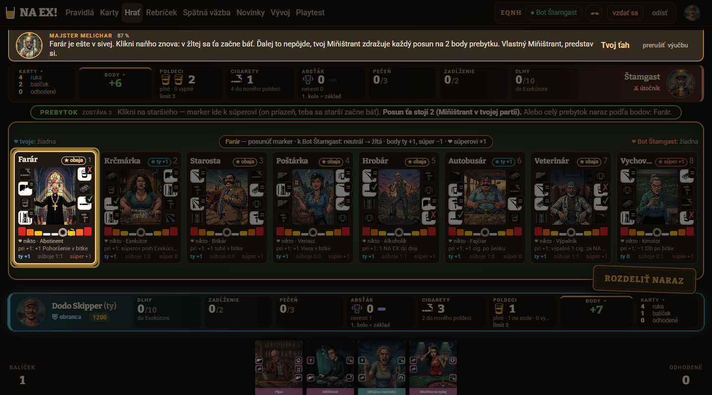
K8 · Krok 42–43 (q-starsi → i-koniec) — scenár + UI
Rozpor: Bez avíza sa objaví „VYHRAL SI! Posledná bitka. Body 8:4“ a panel „vydesenie ty 0/4“. Farár „bojí sa teba“, ale „dáva Štamgastovi priazeň +1“.
Overenie: Skrátenie na 1 kolo je zámer scenára; prechod však nie je ohlásený a pojmy priazeň, vydesenie, strach stoja vedľa seba bez slovníka.
Krok na reprodukciu: Krok 42: odpovedz na kvíz.

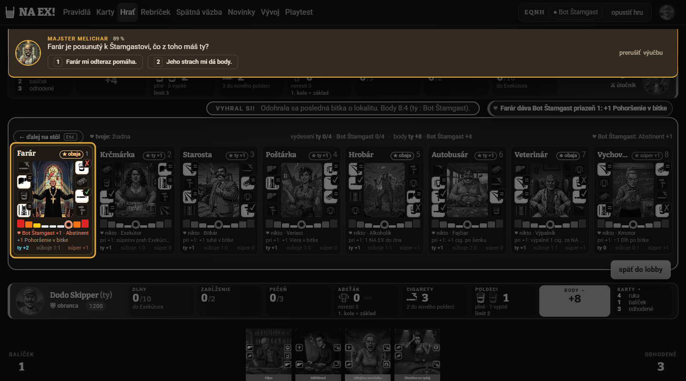
K9 · Krok 44 (i-body) — scenár
Rozpor: Melichar vysvetlí len Farára (2 vs 1), no 8 bodov dalo viac starších.
Overenie: Číslo 8 súhlasí s lištou; chýba rozpis.
Krok na reprodukciu: Krok 44.
K10 · Krok 46 (q-plan-naex) — scenár — chyba kvízu
Rozpor: Otázka „plné poldeci a Petelica bez partnera“ je nejednoznačná: hráč zvolil „najprv vyložím partnera“.
Overenie: Podľa §7 v Pitke sa karty nekladú; odpoveď je rozumná v Zhromaždení, otázka fázu neuvádza.
Krok na reprodukciu: Krok 46.
K11 · Krok 26 (k-pas), štvrtá karta — hra / UI
Rozpor: Hláška „Karta sa nepoložila. Pusti ju na zvýraznené miesto alebo klikni na +“, hoci žiadne + nie je (limit 3 karty).
Overenie: Chybová hláška nepasuje na stav „limit kariet“ — zavádzajúca. Pokyn „Potiahni kartu z ruky“ navyše ostáva aj po vyčerpaní limitu.
Krok na reprodukciu: Krok 26: potiahni na stôl štvrtú kartu.

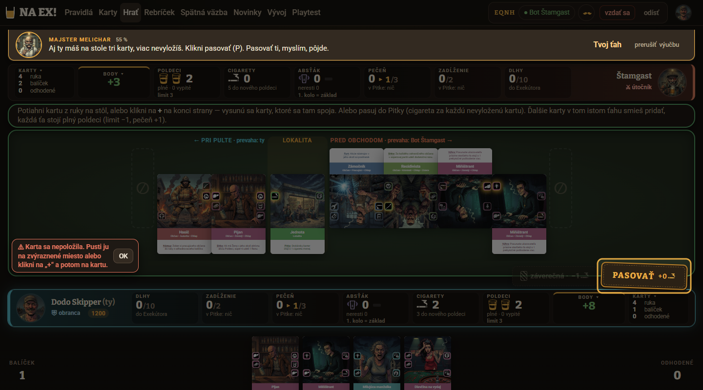
K12 · Kroky 14, 25, 34 — UI
Rozpor: Hore stojí „ČAKÁŠ Na ťahu je Bot Štamgast“ (alebo „Potiahni kartu“), kým Melichar vysvetľuje a hráč nič nerobí.
Overenie: Stavový pruh sleduje hru, nie scenár; v kroku bez ťahu vyznieva protirečivo.
Krok na reprodukciu: Kroky 14, 25, 34.
2. UI a UX
(a) Nálezy, ktoré mohla opraviť verzia po teste (commit 908e567)
Podľa zoznamu zmien commitu; nové snímky nemám, preto „pravdepodobne opravené“ a treba nový beh.
Bublina Melichara sa orezáva a scrolluje (šípky) pri 3+ riadkoch alebo paneli ODHAD: kroky 19, 20, 24, 25, 31, 35, 41, 44, 47.
Čo mohlo pomôcť: 908e567: StrankovanaVeta delí text na strany bez scrollu; odhad v bubline je užší bez riadku „ešte môže“. Commit uvádza jednu stranu pre každý krok pri 1440×800.
Overiť: Overiť novým behom.
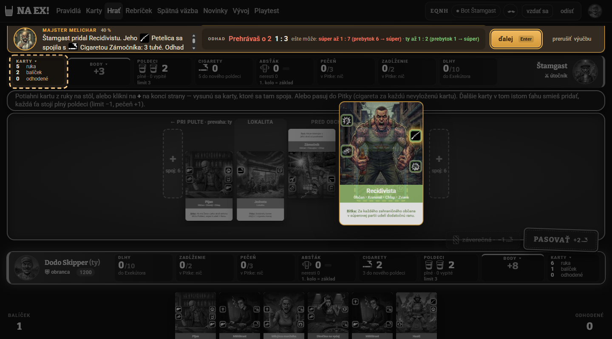
Kvíz zakrýva horný panel Štamgasta (karty, poldeci, cigarety): kroky 18, 32, 37, 42, 46.
Čo mohlo pomôcť: 908e567: kvíz je celý v bare, 2 možnosti pod sebou (klávesy 1, 2); odpoveď je samostatné okno v bare so „späť na otázku“.
Overiť: Overiť novým behom.
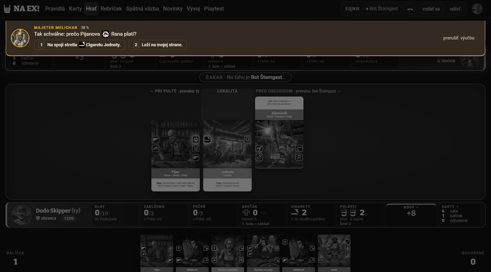
Červená výčitka po zlom ťahu skráti pôvodný text bubliny (kroky 30, 40).
Čo mohlo pomôcť: Pravdepodobne opravené: bublina stránkuje vety, ale z podkladov nie je jasné, ako sa pridá riadok výčitky.
Overiť: Overiť zlým ťahom v krokoch 30 a 40.
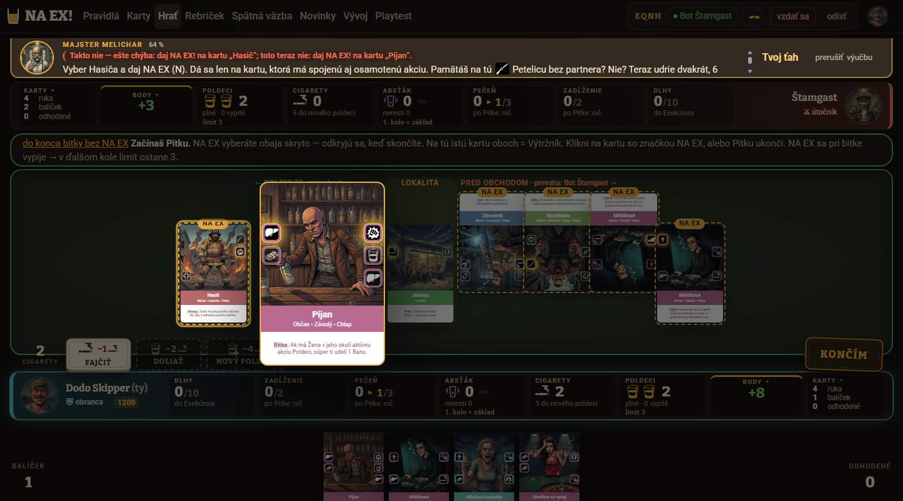
Odhad bitky „ešte môže súper až 1:7…“ je drobný a ťažko zrozumiteľný (krok 19).
Čo mohlo pomôcť: 908e567 riadok „ešte môže“ v bubline odstránil.
Overiť: Overiť.
(b) Nálezy, ktoré pretrvávajú
Tieto commit 908e567 nemenil (menil bar, kvíz a stránkovanie bubliny).
Stôl je takmer čiernobiely počas výkladu (kroky 1–14, 21, 25, 28–36), aj karty šenku; farebný je až pri ťahu hráča. Hráč nevidí spoje, o ktorých Melichar hovorí (krok 21). UI
Zošednutie stola nie je v zozname zmien 908e567 (menil sa bar).
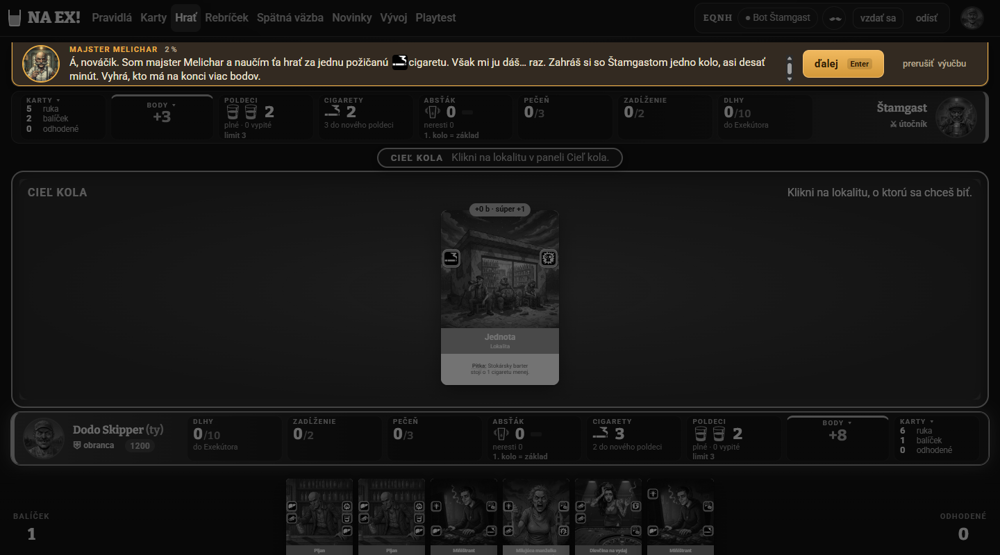
Zvýraznenie KARTY / CIGARETY Štamgasta svieti v krokoch 9, 13, 16, 22 bez súvisu s textom; v kroku 16 svieti celé pole namiesto spoja. UI + scenár
Zvýraznenie z kroku 8 ostáva, ak krok nemá vlastné zvyraznit.
Klik na svietiacu Jednotu v kroku 2 (informačný krok) otvorí dosku Cieľ s POTVRDIŤ; X ju nezavrie, pomohol až Enter. Cieľ by sa dal potvrdiť pred výukou. UI
Počas info kroku sú klikateľné prvky živé.
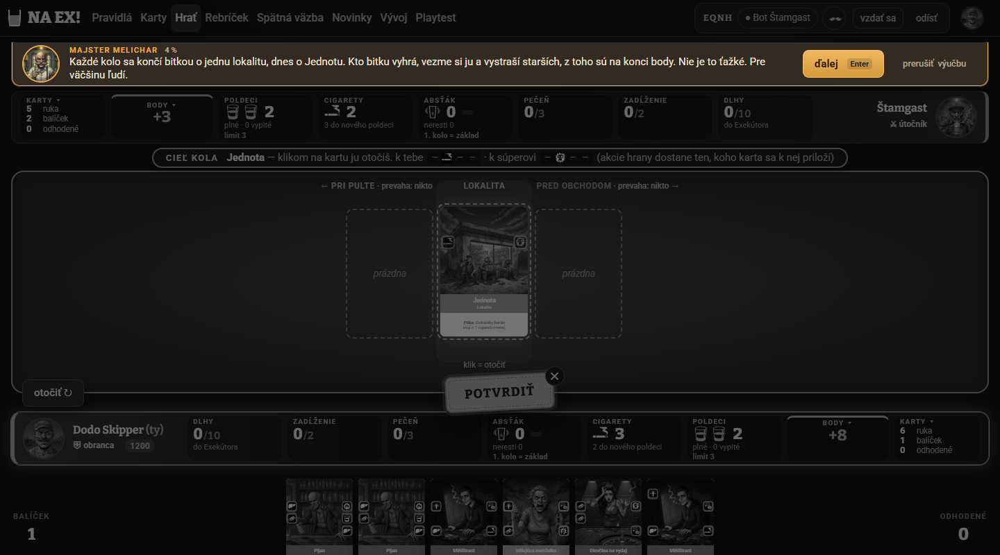
Krok 6: žiadna bublina, nadpis vyzýva „Vyber 4 karty na Smetisko“ (viď K1). UI + scenár
Automatický krok bez textu.
Hláška pri štvrtej karte odkazuje na neexistujúce „+“ (viď K11). hra
Hláška hry.
Klik na deaktivované DOLIAŤ nerobí nič, bez hlášky (krok 33). UI
Tichý klik.
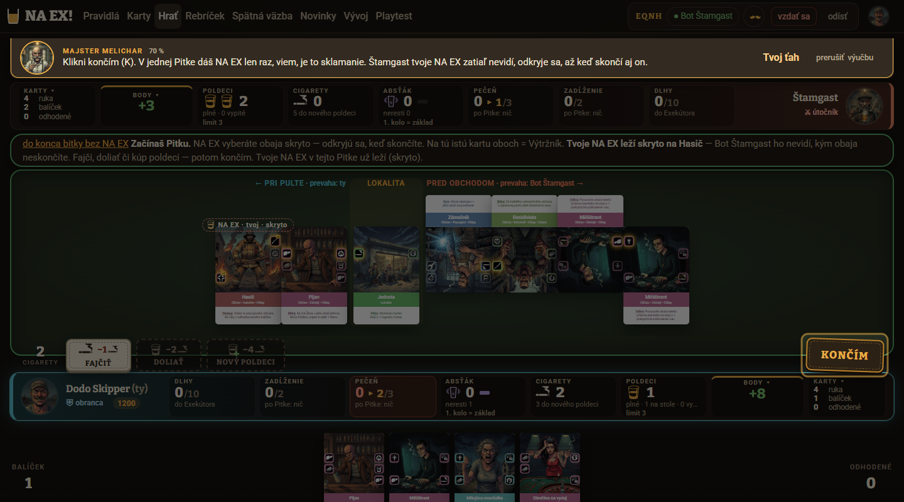
Nadpis Pitky: odtrhnutý začiatok „do konca bitky bez NA EX“ zlepený s „Začínaš Pitku“; číslo „2 CIGARETY“ pri FAJČIŤ nalepené na okraj stola (kroky 27–28). UI
Nesúvisí s barom.
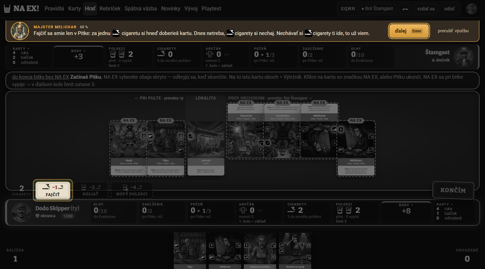
Panel starších a šenok: text ~8 px, ikony akcií 8–10 px, ikony priazne bez legendy; súperove karty hore nohami sa nedajú čítať (kroky 9, 16, 35, 38). UI
Nie je v 908e567.
Hover náhľad karty v ruke je veľký a zakrýva stôl (kroky 11, 19, 30). UI
Nie je v 908e567.
Po bitke sa počas výučby ukážu tlačidlá „← ďalej na stôl Esc“ a „späť do lobby“ (krok 42). UI
Nie je v 908e567.
Animácia bitky začne na 1 : 0 (viď K6); lišta fáz sa pri zmene fázy tlačí pod bublinu (kroky 15, 27). UI
Nie je v 908e567.
3. Známky V1–V10
Priemer 6,0. Klikni na „Známka“ pre zoradenie.
| Kritérium | Známka | Zdôvodnenie |
|---|---|---|
| V1 Pochopenie hry | 6 | Spoje, tuhé a bitku pochopil; šenok, Dlh, Absťák a podmienky starších nie. |
| V2 Jasnosť pokynov | 6 | Dobré pri „Tvoj ťah“ so zvýraznením; v krokoch 17 a 24 nevidno, ktoré „+“ je správne. |
| V3 Vysvetlenie „prečo“ | 5 | Prečo spoj, prečo NA EX, prečo posun stojí 2 — Melichar prikáže alebo zavtipkuje. |
| V4 Bublina Melichara | 5 | Orezanie a scrollovanie; kvíz zakrýva horný panel (opravené v 908e567). |
| V5 Zvýraznenie | 7 | Viera, stupnica, PASOVAŤ a KONČÍM výborné; panely Štamgasta svietia bez súvisu. |
| V6 Ovládanie | 6 | Ťahanie a P/K/N fungujú; DOLIAŤ tichý, hláška pri 4. karte zavádzajúca. |
| V7 Tempo a dĺžka | 6 | 47 krokov je veľa, cez Enter ~5 min; prvá tretina je pomalá. |
| V8 Tón a Melichar | 8 | Suchý sarkazmus bavil. |
| V9 Čitateľnosť stola | 5 | Sivý stôl, ikony 8–10 px, súperove karty hore nohami. |
| V10 Chuť hrať | 6 | Chcel by skúsiť NA EX a starších; pečeň a dlhy pôsobia ako záťaž. |
4. Test pochopenia
| Téma | Stav | Odpoveď a overenie |
|---|---|---|
| 1 Cieľ a body | čiastočne | Viac bodov ako Štamgast, body dávajú starší (správne); ako sa zrátajú, nevie. |
| 2 Poradie kola | správne | Cieľ, šenok, Zhromaždenie, Pitka, bitka, prebytok posúva starších. Draft nevie, ale výučba ho neučí. |
| 3 Zhromaždenie a limit | správne | Striedavo, max 3, spoj len s partnerom, kartu aj na súperovu stranu. |
| 4 Pitka a NA EX | čiastočne | NA EX = plný poldeci na kartu, osamotenú akciu zdvojí, pečeň sa plní. Nevie, čo sa stane so spojenými (správne: zrušia sa, §7). Krok 29 je najhustejší. |
| 5 Bitka a tuhé | správne | Rana 1, Petelica 3, víťaz berie lokalitu, prebytok posúva starších, súper môže odpovedať kartou. |
| 6 Starší | čiastočne | Stupnica a prebytok správne; podmienky starších a výpočet bodov nevie. |
| 7 Poldeci a cigarety | správne | Poldeci = limit kariet, cigarety = peniaze; Absťák, Dlh, Exekútor nevie (učia nápovedy). |
Skóre: 4 správne, 3 čiastočne, 0 zle z 7 tém (témy som určil z odpovedí, znenie otázok v podkladoch nie je). Výučba spoľahlivo naučila spoje, tuhé, bitku, limit kariet a peniaze; nenaučila výpočet bodov podľa podmienok starších a čo NA EX robí so spojenými akciami.
5. Problémové kroky
| Krok | id | Melichar | Jasnosť |
|---|---|---|---|
| 6 | k-stavba | (bez textu) | 2/5 |
| 17 | k-pijan | Polož Pijana k Jednote… | 4/5 |
| 19 | k-zh-bot2 | Štamgast pridal Recidivistu… | 2/5 |
| 24 | k-ministrant | Máš dvoch Miňištrantov… | 3/5 |
| 26 | k-pas | Aj ty máš na stole tri karty | 3/5 |
| 29 | i-naex | Najsilnejší ťah je NA EX… | 2/5 |
| 30 | k-naex | Vyber Hasiča a daj NA EX | 3/5 |
| 33 | k-hotovo | Klikni končím (K)… | 3/5 |
| 35 | k-naex-bot | Na tvoje NA EX smel Štamgast… | 2/5 |
| 40 | k-prebytok1 | Vyhral si o 5 tuhých… | 3/5 |
| 42 | i-koniec | Koniec hry a víťazstvo 8 : 4! | 3/5 |
Ostatné kroky majú jasnosť 4–5. Zaseknutia: krok 2→3 (doska Cieľ), krok 6 (bez bubliny), krok 17 (nevedel, ktoré „+“; zlý ťah hra opravila).
6. Dĺžka, tempo, Melichar
47 krokov, asi 10 minút; cez Enter ~5 minút. Kroky 3–14 (cieľ, bar, šenok) sú pomalé a o hlavnej hre učia málo; kroky 36–44 sú zhustené. Najdlhšie: q-spoj 27 s, k-pijan 18 s, k-kup-hasic 14 s. Melichar: tón sedí (V8 = 8), najlepšia „Pre väčšinu ľudí.“ (krok 2), najhoršia „Ja tomu tiež nerozumiem“ (krok 39); vtipy sa opakujú („počkám“, „kvôli tebe som to skrátil“).
Chýba: Draft/Voľba cieľa a Smetisko, pečeň (čo po pretečení), dlhy a Absťák, čo je pasovanie, podmienky starších, počet kôl. Navyše: kroky 6–8 a opakovaný text o cigaretách (4, 12, 13, 28).